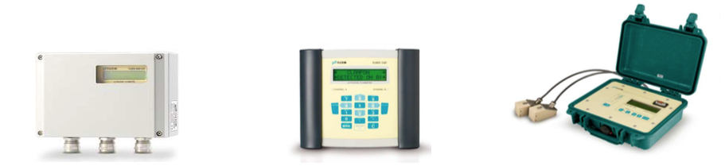

MEDIDORES DE FLUJO TIPO ULTRASONICOS NO INTRUSIVOS

Medidores de flujo tipo ultrasonicos no intrusivos marca FLEXIM.
- Para tuberias de plastico y metal de 10 a 2500 mm de diametro.
- Equipos para Gas natural, productos refinados, agua, entre otros.
- Registro Historico de datos
- Comunicaciones por Modbus RTU
- Instalación sin paro de proceso y sin posibilidades de fuga, no se causa perdida de presión.